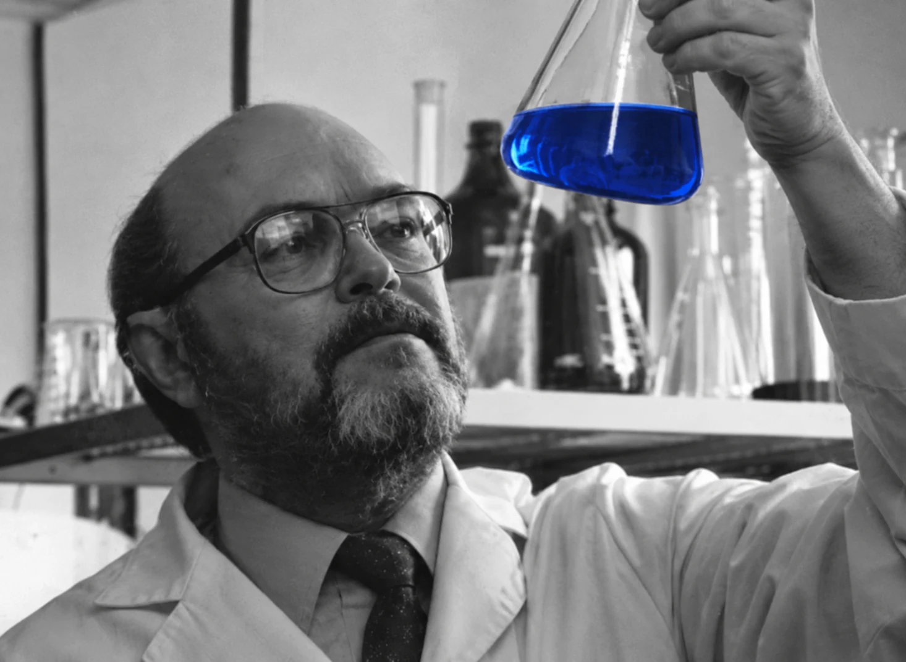
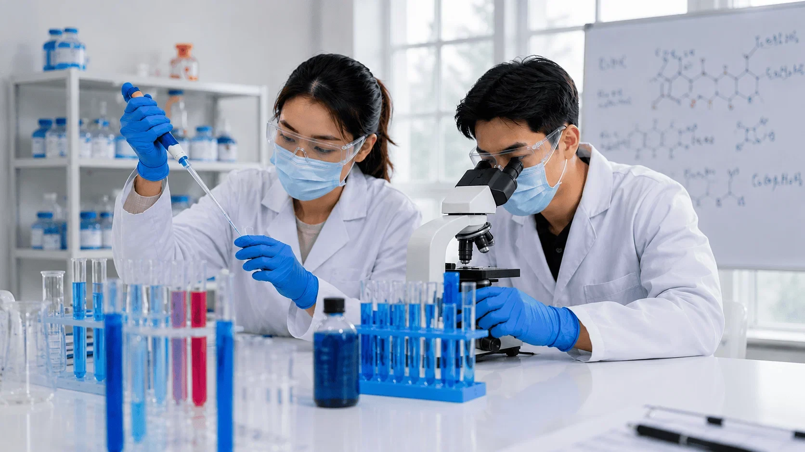
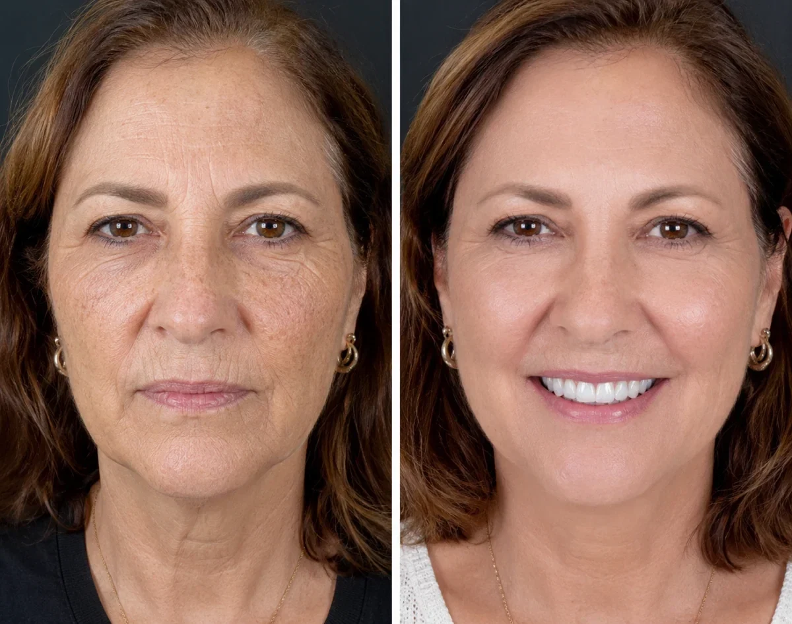
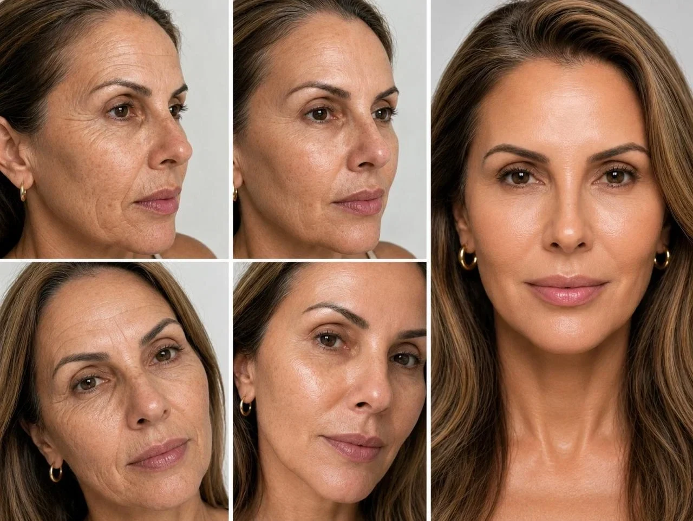

Toda manhã, milhares de mulheres brasileiras passam pela mesma frustração silenciosa: elas se olham no espelho e percebem o rosto mais cansado do que ontem.
As linhas finas viraram rugas marcadas, o "bigode chinês" pesou e ficou com aquela expressão de rosto caído, e a pele perdeu aquele brilho natural e iluminado da juventude.
Você já deve ter gastado fortunas com dezenas de cremes de farmácia, ácido hialurônico, vitamina C e o temido Retinol.
Mas o resultado é sempre o mesmo: uma pele que fica hidratada por algumas horas, mas que continua fina, opaca e flácida.
A grande verdade que a indústria cosmética tradicional tenta esconder é que 90% dos cremes anti-idade agem apenas na superfície.
Eles são como uma pintura nova em uma parede que está com a estrutura interna apodrecida.
Mas enquanto nós continuamos sofrendo com tratamentos que custam mais de 2 mil reais, que ardem, mancham e descamam a pele, as mulheres na Coreia do Sul estão utilizando um caminho completamente diferente.
A descoberta que mudou o cuidado com a pele e por que o GHK-Cu é tão importante pra você

Para entender o segredo por trás da pele firme e impecável das asiáticas, precisamos voltar à raiz da descoberta científica.
Em 1973, o renomado bioquímico Dr. Loren Pickart, maior autoridade mundial em pesquisas sobre o envelhecimento cutâneo, fez uma descoberta que abalou a comunidade médica.
Ao analisar o organismo de pessoas jovens e compará-lo com o de pessoas mais velhas, ele isolou uma molécula natural fascinante: Copper peptide GHK-Cu (Glicil-L-Histidil-L-Lisina acoplado ao Cobre).
O Dr. Pickart dedicou sua vida a provar o poder supremo dessa substância.
A grande genialidade dessa molécula é que ela é um Peptídeo Biomimético.
Ou seja, o GHK-Cu é um fragmento natural de proteína que já existe no seu próprio plasma humano.
Por ter essa afinidade perfeita, quando aplicado no rosto, a pele não o rejeita como faz com os ácidos artificiais.
Ele interage diretamente com os fibroblastos (as "fábricas" das suas células), obrigando o seu organismo a voltar a produzir colágeno e elastina puros, exatamente como fazia quando você tinha 20 anos.
Por ter uma coloração celestial natural e ser um ativo extremamente raro e valioso, o peptídeo GHK-Cu foi apelidado nas clínicas de elite de Seul de "O Ouro Azul da Dermatologia".
Comprovação Científica Internacional
Não se trata de mágica, mas de biologia exata. Um estudo oficial publicado no renomado Journal of Investigative Dermatology comprovou que o GHK-Cu aumenta significativamente a síntese de colágeno tipo I e III em fibroblastos humanos.
As pesquisas clínicas conduzidas na Coreia do Sul demonstraram que o ativo age de dentro para fora, entregando uma melhora estrutural visível na pele entre 4 a 8 semanas de uso contínuo.
Os resultados documentados nas pesquisas são chocantes:
- Aumento maciço na produção de colágeno e fortalecimento da matriz da pele.
- Redução drástica da inflamação celular (o que acaba com a vermelhidão).
- Devolução do brilho espelhado e do viço profundo (o cobiçado efeito Radiant Glass Skin).
O poder de cicatrização e regeneração celular é tão extremo que esse peptídeo é a indicação número um nas clínicas asiáticas para recuperar a pele após procedimentos estéticos agressivos e lasers.
Tudo de forma segura e com alta tolerância.
O Desafio: Como Trazer o "Ouro Azul" para a Sua Rotina?
Apesar de ser considerado o "Santo Graal" do rejuvenescimento absoluto, o GHK-Cu puro tem um problema:
Ele é extremamente raro e instável.
Se não for isolado com perfeição, ele oxida e perde sua força em poucos dias.
Por muito tempo, o acesso a esse Ouro Azul era restrito a sessões de infusão preparadas na hora (que chegavam a custar mais de 10 mil reais) em clínicas dermatológicas exclusivas em Seul, Tóquio e Genebra.
Mas a biotecnologia avançou. Após anos de testes, um laboratório especializado decifrou a estabilização perfeita através de uma Matriz de Proteção Molecular.
Eles descobriram que, ao isolar o peptídeo de cobre utilizando o Edetato Dissódico em conjunto com o Hidroxitolueno Butilado (compostos biológicos antioxidantes de altíssima precisão), cria-se um verdadeiro "escudo de força" invisível ao redor da molécula.

O que isso significa na prática? Essa armadura molecular impede que o Ouro Azul se degrade dentro do frasco.
O GHK-Cu permanece blindado, 100% puro e adormecido, preservando sua capacidade máxima de reativar o colágeno.
Ele só "desperta" e rompe esse escudo no exato milissegundo em que entra em contato com o calor e o pH da sua pele.
A entrega dos ativos na derme é fulminante, profunda e intacta.
Foi exatamente com essa engenharia química de precisão que nasceu o Divessence.
O Divessence não é mais um sérum comum para ficar na sua cômoda. É o primeiro tratamento de uso diário no Brasil que entrega a dosagem exata do GHK-Cu puro diretamente nas camadas mais profundas do seu rosto, sem perder 1% sequer de eficácia.
Por ser um ativo inteligente e biomimético, a sua pele "suga" o sérum azul imediatamente.
Enquanto os ácidos tradicionais machucam a pele e não podem ser usados de dia, o Divessence pode e deve ser usado em qualquer época do ano, blindando seu rosto e reconstruindo a firmeza até mesmo sob o forte sol brasileiro.

O "Desafio da Pele de Vidro" que Mudou Tudo
Mariana S., 54 anos, via seu rosto derreter com a flacidez acelerada pelos estresses da vida. "Eu já não sabia mais o que fazer. Tinha tentado de tudo na farmácia, e o Retinol só me causou manchas e deixou minha pele ardendo", desabafa.

Convidada para testar o Divessence 60 dias antes do lançamento, o resultado superou as expectativas dos próprios pesquisadores:
"O grande diferencial é a textura e a velocidade. Em poucas semanas usando o sérum de Ouro Azul, aquele brilho espelhado que eu só via nas atrizes coreanas se tornou real no meu espelho.
Minha pele ficou mais grossa, muito firme... sinto que rejuvenesci uma década (risos). É uma tecnologia fantástica que nunca mais vai faltar na minha rotina", afirma Mariana.
Comparativo: Por que o GHK-CU Vence a Indústria Tradicional?
Testes independentes compararam os principais tratamentos do mercado. Os resultados abaixo explicam por que as mulheres de 40+ estão abandonando suas rotinas antigas:
Garantia Inédita de 90 Dias (Risco Zero)
Para provar a superioridade absoluta desta matriz molecular sobre os cremes tradicionais, o fabricante do Divessence exigiu trazer para o Brasil uma política de satisfação impecável.
Se você adquirir o tratamento completo (a partir de 3 frascos, equivalente a 90 dias) e, neste período, não perceber a reativação clara da firmeza da sua pele.
O clareamento do viço e a redução visível das rugas... a marca devolve 100% do seu dinheiro. Sem questionários chatos. Sem letras miúdas.
Oportunidade Especial de Lançamento (Estoque Limitado)
Devido à extrema complexidade de estabilizar o GHK-Cu, a produção da Divessence é feita de forma muito restrita, em pequenos lotes.
O lançamento causou um verdadeiro alvoroço no mercado de estética e os estoques atuais estão se esgotando rapidamente.
Durante a produção desta reportagem, nossa equipe conseguiu assegurar um link exclusivo que aplica automaticamente um Mega Desconto e libera a condição de parcelamento em até 12x no cartão.
ATENÇÃO: O desconto é válido apenas enquanto durarem os estoques do Lote Atual.
Se você deseja voltar a se sentir confiante e poderosa ao olhar no espelho, com uma pele firme, esticada e iluminada...
Clique no botão acima agora e verifique a disponibilidade para a sua região.